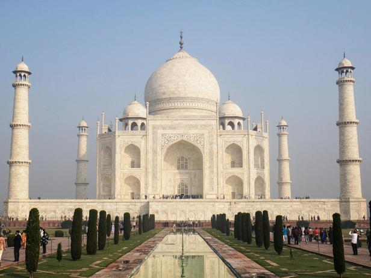

Here are the 7 wonders of the world, let's get going!
| Table of contents: |
|---|
| The great wall of china |
| Christ The Redeemer Statue(Rio de Janerio) |
| Machu Picchu |
| Chichen Itza (Yucatan Peninsula, Mexico) |
| The roman collesuem |
| Taj Mahal(in india) |
| Petra(from jordan) |
NUMBER 1: The great wall of china.
This amazing creation was made between the 5th century B.C. and the 16th century, the Great Wall of China is a stone-and-earth fortification created to protect the borders of the Chinese Empire from invading mongols/invaders. The Great Wall is actually a succession of multiple walls spanning approximately 4,000 miles, making it the world's longest manmade structure. It is an amazing sight, go check it out(if you can, that is)

NUMBER 2: Christ The Redeemer Statue(Rio de Janerio)
"The Art Deco-style Christ the Redeemer statue has been looming over the Brazilians from upon Corcovado mountain in an awe-inspiring state of eternal blessing since 1931. Pretty old, but still stays strong! The 130-foot reinforced concrete-and-soapstone statue was designed by Heitor da Silva Costa and cost approximately $250,000 to build(which was expected) - much of the money was raised through donations, and it was all worth it! The statue has become an easily recognized icon for Rio and Brazil. Now it is for the WORLD!

NUMBER 3: Machu Picchu
Machu Picchu, an Incan city of sparkling granite precariously perched between 2 towering Andean peaks, is thought by scholars to have been a sacred archaeological center for the nearby Incan capital of Cusco. Absolute beautiful. Built at the peak of the Incan Empire in the mid-1400s, this mountain citadel was later abandoned by the Incas. The site remained unknown except to locals until 1911, when it was rediscovered by archaeologist Hiram Bingham. Seeing it's beauty must have truly shocked him out!. The site can only be reached by foot, train or helicopter; most of the visitors visit by train from nearby Cusco.

NUMBER 4:Chichen Itza (Yucatan Peninsula, Mexico)
The genius and adaptability of Mayan culture can be seen in the splendid ruins of Chichen Itza. This powerful city, a trading center for cloth, slaves, honey and salt, flourished from approximately 800 to 1200, and acted as the political and economic hub of the Mayan civilization. Big and strong, it stayed as the mayan civilization's hub, standing amazing to this day. The most familiar ruin at the site is El Caracol, a sophisticated astronomical observatory.

NUMBER 5: The roman collesuem(in rome, obviously)
Rome's, if not Italy's(yes, it is an sight you might know of!), most enduring icon is undoubtedly its Colosseum. Built between A.D. 70 and 80 A.D., it was in use for some 500 years. The elliptical structure sat nearly 50,000 spectators, who gathered to watch the gladiatorial events as well as other public spectacles, including battle reenactments, animal hunts and executions. Earthquakes and stone-robbers have left the Colosseum in a state of ruin, broken into pieces, old and scratched, but portions of the structure remain open to tourists, and its design still influences the construction of modern-day amphitheaters, some 2,000 years later. That really old structure, is some what, if not mostly, influenceing most of modern day structures, that is AWESOME!.

NUMBER 6:Taj Mahal(in india)
A mausoleum commissioned for the wife of Mughal Emperor Shah Jahan, the Taj Mahal was built between 1632 and 1648. Considered the most perfect specimen of Muslim art in India, the white marble structure actually represents a number of architectural styles, including Persian, Islamic, Turkish and Indian. The Taj Mahal also encompasses formal gardens of raised pathways, sunken flower beds and a linear reflecting pool. There are mysteries in the taj mahal waiting to get unsolved, but without it, we can still enjoy(I hope so)!
NUMBER 7: Petra(from jordan):
Declared a World Heritage Site in 1985, Petra was the capital of the Nabataean empire of King Aretas IV, and likely existed in its prime from 9 B.C. to A.D. 40. The members of this civilization proved to be early experts in manipulating water technology, constructing intricate tunnels and water chambers, which helped create an pseudo-oasis. A number of incredible structures carved into stone, a 4,000-seat amphitheater and the El-Deir monastery have also helped the site earn its fame. Historical looking, awe catching, amazing wonder, standing in Jordan.

That is it for now, the 7 wonders that made my eyes go wow. My brain too, obviously. Hope you like them!